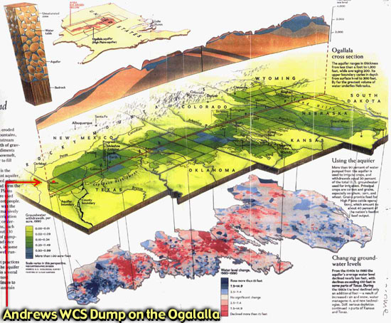
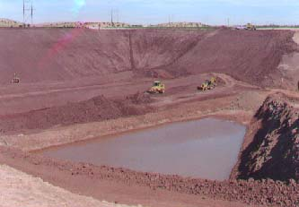

Scientific and Rejection Data

Bigger version below is "ogalalla side view"
Note: The Andrews Dump Site is not always labled on the maps provided. Please refer to the road
map on the main page for the location of the dump.
Area Rejected in 1987
Texas Low Level Radioactive Waste Disposal
Authority's previous rejection of the Andrews site in 1987.
This site was also rejected by the SuperCollider Site Search.
Hydrology and Geology around Andrews
Review of Geology and Hydrology of the northwest corner of University of Texas property
in Andrews County, Texas, as a possible site for a Low-Level Nuclear Waste Disposal Facility
Seismicity and Andrews WCS Dump (Geological data)
The University of Texas Marine Science Institute, Galveston Geophysics Laboratory
Tectonic Shelf Margins - Fig 1 - 174k GIF
Seismic Data - Fig 3 - 215k GIF
Temblor - called "Shaking" hazard map by insurance companies - 30k GIF
Hydrology around Andrews
U of Texas Geology Dept.;
Playas and Recharge of the Southern High Plains; Ogallala Aquifer
Report on investigation #242
Playas and Recharge Zones - Southern High Plains of Texas fig 1 - 142k GIF
Pecos river basin and alluvial aquifer - 19k GIF
The Rio Conchos/ Rio Grande/ Pecos River basin - 102k GIF
Other Hydrology maps- US Geological Survey (many from thier
Ogallala page)
Ogallala contour/ migration - 16k GIF
Major Aquifers of Texas - 225k GIF
Minor Aquifers - 65k GIF
Ogallala Yield - 17k GIF
Ogallala Bedrock - 17k GIF
Base of Ogallala Contour - 15k GIF
See also the USGS
Hydrology page
*Ogallala Side view* -
129k
JPG
Colorado River - 42k GIF
What does a recharge feature look
like?
This is a key to scientifically debunking the so called analysis of the site
by Texas Tech claiming the site is suitable.
This JPG(38K) is a photo of a Andrews geologist pointing out a
major recharge feature visible in the face of the WCS facility's pit wall
known as a 'sand worm' or 'sand tube'. This is where percolating, flowing waters
have removed the organic matter from the clay over millions of years, leaving behind sand in a
tube form connecting the aquifers beneath to the surface water collection
forms known as playa lakes. Also known as 'buffalo wallows,' there are 19,500 playa lakes
in the southern high plains of Texas that feed the enormous Ogallala aquifer
as well as the numerous minor aquifers. (see maps)
Graphs from 'Report to Congress- 1995 Annual Report on Low-Level Radioactive Waste
Management Progress,' US
Department of Energy, Office of Environmental Management, June 1996.
Low-Level Radioactive Wastes Recieved by
Commercial Sites- Sources - 36k JPEG
One of the things repeatedly mentioned in discussing
Andrews and other sites in the region is medical wastes, although the graph
on the lower right indicates medical wastes comprise merely 0.3% volume of the wastes
handled by the dump sites in the 1995 report.
Volume distribution by waste class - 58k JPEG
The chart at the bottom of the graphic demonstrates the percentages of
various classes of waste intake (A, B, and C) averaged for the entire US by 1995.
See the WCS's license for definitions of these classes.
Class "A" comprises 96.7% of the waste in storage.
Report indicates Andrews site may be unsuitable
- UT study discloses presence of Ogallala aquifer in proposed nuclear waste site.
- March 17, 1999, Odessa American, by Greg Harman
- "A study released by the University of Texas at Austin's Bureau of Economic Geology shows the
geology of western Andrews County may be unsuitable for radioactive waste disposal.
The report, released late last month and made public Tuesday, said the Ogallala aquifer is located
beneath land owned by Envirocare of Texas and may also lie beneath Waste Control Specialists'
hazardous and low-level radioactive storage facility.
Concerned mainly with the possible location of underground water beneath the two sites, the report
prepared by the bureau's research scientist, Alan Dutton, questions the methodology behind a recent
report by Texas Tech University scientists, paid for by Pasadena-based Waste Control Specialists.
"He states that Ogallala is absent at the WCS site," Dutton's report said.
"No scientific description or documentation were included with the text ... to substantiate these
interpretations."
The report also states that "the description of core materials" at the WCS site
resemble those found at Envirocare's 888 acres, located eight miles southeast of
Envirocare's unimproved lands. Wet core samples taken from the Envirocare of
Texas site reflect the presence of groundwater, the report said. Core samples
taken from the WCS site for the company's 1993 application for radioactive waste
disposal also were wet."
Cross-section of the Dump's Liner System
-

This graphic is from the WCS site. Here is a lower quality image we
obtained taken either
right before or after; the positioning of the bulldozers implies this. It was taken after
raining the night before as is evident with the water at the bottom of the partially dug pit.
{kind=link}
{kind=link}
{kind=link}
{kind=link}
{kind=link}
{kind=link}
{kind=link}
{kind=link}
{kind=link}
{kind=link}
{kind=link}
{kind=link}
{kind=link}
{kind=link}
{kind=link}
{kind=link}
{kind=link}
{kind=link}
{kind=link}